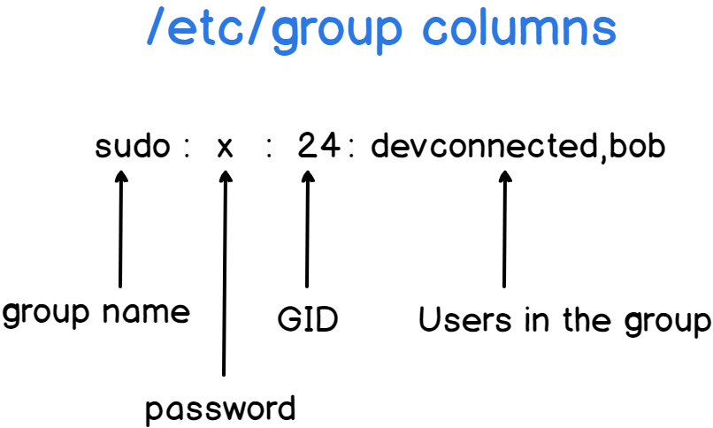
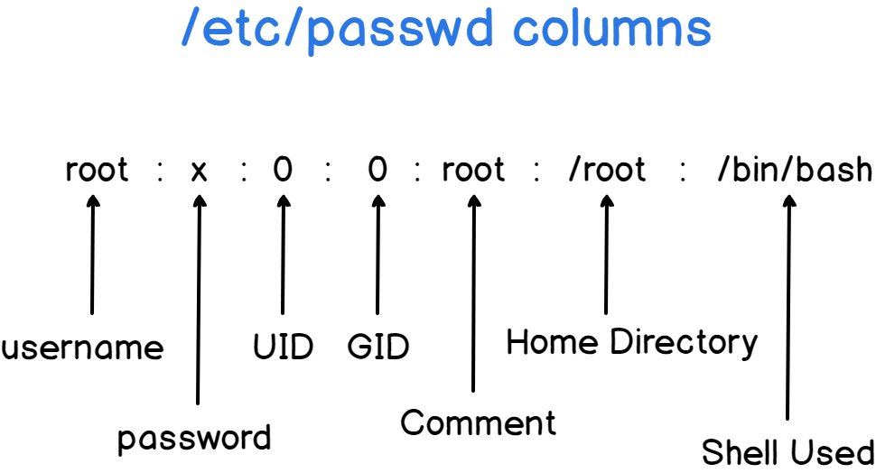
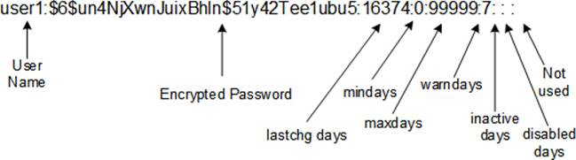

Table of Contents generated with DocToc
drop caches
$ sudo bash -c "echo 3 > /proc/sys/vm/drop_caches"
system info
hardware
$ sudo dmidecode -s
system information
$ sudo dmidecode | grep -A3 '^System Information'
System Information
Manufacturer: HPE
Product Name: ProLiant DL380 Gen10
Version: Not Specified
# or
$ inxi -M
Machine: Type: Server Mobo: HPE model: ProLiant DL380 Gen10 serial: <root required> UEFI: HPE v: U30
date: 06/15/2018
# or
$ sudo inxi --dmidecode -Mxxx
Machine: Type: Rack Mount Chassis Mobo: HPE model: ProLiant DL380 Gen10 serial: PFARA%%LMAZ6XB BIOS: HPE
v: U30 rev: 1.40 date: 06/15/2018 rom size: 16384 kB
manufacturer
$ sudo dmidecode -s system-manufacturer
HPE
# or
$ sudo dmidecode -s baseboard-manufacturer
HPE
# or
$ cat /sys/devices/virtual/dmi/id/sys_vendor
HPE
product name and version
product name only
$ sudo dmidecode -s system-product-name
ProLiant DL380 Gen10
# or
$ sudo dmidecode -s baseboard-product-name
ProLiant DL380 Gen10
# or
$ cat /sys/devices/virtual/dmi/id/product_name
ProLiant DL380 Gen10
# or
$ sudo dmidecode | grep -i prod
Product Name: Vostro 5560
Product Name: 04YDT0
uuid
$ sudo dmidecode | grep -i uuid | awk '{print $2}' | tr '[:upper:]' '[:lower:]'
cpu
cpu cores
$ cat /proc/cpuinfo | egrep "core id|physical id" | tr -d "\n" | sed s/physical/\\nphysical/g | grep -v ^$ | sort | uniq | wc -l
36
check CPU support 64 bit or not
$ sudo dmidecode --type=processor | grep -i -A 1 charac
Characteristics:
64-bit capable
cat /etc/cpuinfo
$ lscpu
Architecture: i686
CPU op-mode(s): 32-bit, 64-bit
Byte Order: Little Endian
CPU(s): 4
On-line CPU(s) list: 0-3
....
memory
print memory only
$ ps -o comm,%mem,args -u marslo | more
COMMAND %MEM COMMAND
gnome-keyring-d 0.0 /usr/bin/gnome-keyring-daemon --daemonize --login
init 0.0 init --user
ssh-agent 0.0 ssh-agent
dbus-daemon 0.0 dbus-daemon --fork --session --address=unix:abstract=/tmp/dbus-i5FUVjzADG
upstart-event-b 0.0 upstart-event-bridge
window-stack-br 0.0 /usr/lib/i386-linux-gnu/hud/window-stack-bridge
upstart-dbus-br 0.0 upstart-dbus-bridge --daemon --session --user --bus-name session
upstart-dbus-br 0.0 upstart-dbus-bridge --daemon --system --user --bus-name system
upstart-file-br 0.0 upstart-file-bridge --daemon --user
ibus-daemon 0.1 /usr/bin/ibus-daemon --daemonize --xim
....
network
network speed
$ ifstat -n -i en7
en7
KB/s in KB/s out
7.35 1.15
4.91 1.02
6.05 0.80
8.36 1.78
get the public ip address
$ curl ifconfig.me
environment variables
show PATH
$ echo src::${PATH} | awk 'BEGIN{pwd=ENVIRON["PWD"];RS=":";FS="\n"}!$1{$1=pwd}$1!~/^\//{$1=pwd"/"$1}{print $1}'
/home/marslo/src
/home/marslo
/home/marslo/.vim/tools/bin
/usr/local/mysql/bin
/usr/local/bcompare/bin
/usr/lib/lightdm/lightdm
/usr/local/sbin
/usr/local/bin
/usr/sbin
/usr/bin
/sbin
/bin
/usr/games
/usr/local/games
OR
$ echo "${PATH//:/$'\n'}"
set system info
clear duplicated PATH
$ export PATH=`echo -n $PATH | awk -v RS=":" '{ if (!x[$0]++) {printf s $0; s=":"} }'`
set dns for ubuntu
$ cat /etc/resolv.conf
# Dynamic resolv.conf(5) file for glibc resolver(3) generated by resolvconf(8)
# DO NOT EDIT THIS FILE BY HAND -- YOUR CHANGES WILL BE OVERWRITTEN
nameserver 8.8.8.8
nameserver 8.8.4.4
nameserver 127.0.1.1
$ cat /etc/resolvconf/resolv.conf.d/head
# Dynamic resolv.conf(5) file for glibc resolver(3) generated by resolvconf(8)
# DO NOT EDIT THIS FILE BY HAND -- YOUR CHANGES WILL BE OVERWRITTEN
nameserver 8.8.8.8
nameserver 8.8.4.4
$ sudo resolvconf -u
# or
$ cat /etc/dhcp/dhclient.conf | grep "prepend domain-name-servers"
prepend domain-name-servers 8.8.8.8, 8.8.4.4;
# or
$ cat /etc/network/interfaces | grep dns
dns-nameservers 8.8.8.8 8.8.4.4
disable firewall
$ sudo systemctl stop firewalld
$ sudo systemctl disable firewalld
$ sudo systemctl mask firewalld
- check result
$ sudo systemctl is-enabled firewalld $ sudo systemctl is-active firewalld $ sudo firewall-cmd --state
change net.bridge
$ sudo modprobe br_netfilter
$ sudo sysctl net.bridge.bridge-nf-call-iptables=1
$ sudo sysctl net.bridge.bridge-nf-call-ip6tables=1
# or
$ sudo bash -c "cat > /etc/sysctl.d/k8s.conf" << EOF
net.bridge.bridge-nf-call-ip6tables = 1
net.bridge.bridge-nf-call-iptables = 1
EOF
- check status
$ sudo sysctl --system
off swap
$ sudo swapoff -a
$ sudo bash -c "/usr/bin/sed -e 's:^\\(.*swap.*\\)$:# \\1:' -i /etc/fstab"
disable selinux
$ setenforce 0
$ sudo bash -c "/usr/bin/sed 's/^SELINUX=enforcing$/SELINUX=permissive/' -i /etc/selinux/config"
confined and unconfined users
references:
installation
$ yum -y install setools-consolesetup for exiting account
$ semanage login -a -s staff_u <account> # or $ semanage login -a -s staff_u -r s0-s0:c0.c100 <account>Modifying an existing mapping
$ semanage login -m -s sysadm_u <account>delete a mapping
$ semanage login -d <account>list mappings
$ semanage user -l
process
find the zombie process
$ ps aux | awk '{ print $8 " " $2 " " $11}' | grep -w Z
sort process by PID
$ ps -axww
check the group PID
$ ps -xj
about whatis
$ whatis whois
whois (1) - client for the whois directory service
$ whatis which
which (1) - locate a command
$ whatis whereis
whereis (1) - locate the binary, source, and manual page files for a command
user management
sssd to use LDAP
add user name
$ sss_override user-add username -n secondary-username
# verification
$ id secondary-username
# display the override
$ sss_override user-show user-name
override the uid
# check current uid
$ id -u username
# overwride
$ sss_override user-add <username> -u <new-uid>
$ sss_cache --users
# or
$ sss_cache --user <username>
$ systemctl restart sssd
override the gid
# check current gid
$ id -g username
# override
$ sss_override user-add <username> -g <new-gid>
$ sss_cache --users
$ sss_cache --user <username>
$ systemctl restart sssd
override the home directory
# check current home directory
$ getent passwd username
# override
$ sss_override user-add username -h /new/home/directory
$ systemctl restart sssd
override the shell attribute
# check current
$ getent passwd username
# override
$ sss_override user-add username -s /new/shell
$ systemctl restart sssd
managing the sssd cache
# clear the cache and update all records
$ sudo sss_cache [-E|--everything]
# clear invalidates cache entries for all user records
$ sudo sss_cache [-U|--users]
# clear all cached entries for a particular domain
$ sudo sss_cache [-E|--everything] [-d|--domain] <ldap_name>
# purge the records for that specific account and leave the rest of the cache intact
$ sudo sss_cache [-u|--user] <username>
# invalidates the cache entry for the specified group
$ sudo sss_cache [-g|--group] <groupname>
backup and restore
# export
$ sss_override user-export user-export.bak
$ sss_override group-export group-export.bak
# restore
$ sss_override user-import user-import.bak
$ sss_override group-import group-import.bak
list all override
$ sss_override user-find
create sssd config
After this in /etc/sssd/sssd.conf file
Specify ldap_default_bind_dn and ldap_default_authtok as default bind dn and password respectively, this depends upon your ldap setup.
$ authconfig --enablesssd \
--enablesssdauth \
--enablelocauthorize \
--enableldap \
--enableldapauth \
--ldapserver=ldap://ipaserver.example.com:389 \
--disableldaptls \
--ldapbasedn=dc=example,dc=com \
--enablerfc2307bis \
--enablemkhomedir \
--enablecachecreds \
--update
local user
find users
/etc/passwd/etc/shadow/etc/pam.d/passwdmore on users/etc/login.defs
useradd
create user
devops
$ useradd -c "comments here" \
-m \
-d "/home/devops" \
-u 1000 \
-g 1000 \
-s /bin/bash \
devops
or
$ useradd --comment "comments here" \ --create-home \ --home-dir /home/devops \ --shell /bin/bash \ --uid 1000 \ --gid 1000 \ --user-group devops devopsfull steps
$ uid='1000' $ gid='1000' $ user='devops' $ mkdir -p /home/${user} $ chown -R ${uid}:${gid} /home/${user} $ groupadd -g ${gid} ${user} $ useradd -c "create user ${user}" \ -d "/home/${user}" \ -u ${uid} \ -g ${gid} \ -m \ -s /bin/bash \ ${user}
deluser for ubunut
deluser, delgroup - remove a user or group from the system
SYNOPSIS
- deluser [options] [--force] [--remove-home] [--remove-all-files] [--backup] [--backup-to DIR] user
- deluser --group [options] group
- delgroup [options] [--only-if-empty] group
- deluser [options] user group
$ deluser <account> <group>
local group
/etc/group/etc/passwd/etc/shadow
references:
list all groups
$ getent group
create group with random gid
$ sudo groupadd <group_name>
get available gid
for error:
groupadd: GID 'xxxx' already exists$ gname='mytestgroup' $ sudo groupadd ${gname} $ getent group ${gname} | cut -d: -f3 # or $ sed -nr "s/^${gname}:x:([0-9]+):.*/\1/p" /etc/group # or $ grep "^${gname}" /etc/group|cut -d: -f3 # and finally remove the group $ sudo groupdel ${gname}
create group with particular gid
$ sudo groupadd -g <gid> <group_name>
create group with existing gid
-o (--non-unique) option the groupadd command allows you to create a group with non-unique GID
$ sudo groupadd -o -g <new_gid> <group_name>
modify gid
$ sudo groupmod -g <gid> <group_name>
add user into group
$ usermod -a -G adm,root,sudo,docker devops
remove user from group
$ gpasswd -d <account> <group>
logout
$ pkill -KILL -u ${useranme}
- or
$ who -uH NAME LINE TIME IDLE PID COMMENT devops pts/0 2022-06-14 05:44 00:17 41455 (192.168.1.1) marslo pts/1 2022-06-14 05:58 . 50162 (192.168.1.1) $ sudo kill 41455 $ who -uH NAME LINE TIME IDLE PID COMMENT marslo pts/1 2022-06-14 05:58 . 50162 (192.168.1.1)
others
view users password properties in linux
$ chage -l marslo
Last password change : Mar 09, 2022
Password expires : never
Password inactive : never
Account expires : never
Minimum number of days between password change : 0
Maximum number of days between password change : 99999
Number of days of warning before password expires : 7
hash_algorithm
| Code | Algorithm |
|---|---|
$1 |
MD5 hashing algorithm |
$2 |
Blowfish Algorithm |
$3 |
Eksblowfish Algorithm |
$4 |
NT hashing algorithm |
$5 |
SHA-256 Algorithm |
$6 |
SHA-512 Algorithm |
system encoding
references:
- How to Change or Set System Locales in Linux
/etc/default/locale– on Ubuntu/Debian/etc/locale.conf– on CentOS/RHEL- Unicode characters in console logs do not print correctly in Workflow builds
- Locale
- How to set up a clean UTF-8 environment in Linux
important files:
/etc/default/locale/etc/locale.gen/etc/environment/usr/share/locales/var/lib/locales/supported.d/local/usr/local/share/i18n/SUPPORTED/usr/share/i18n/SUPPORTED
setup via environment
$ sudo bash -c 'cat >> /etc/bash.bashrc' << EOF
export LANG=en_US.UTF-8
export LANGUAGE=$LANG
export LC_COLLATE=$LANG
export LC_CTYPE=$LANG
export LC_MESSAGES=$LANG
export LC_MONETARY=$LANG
export LC_NUMERIC=$LANG
export LC_TIME=$LANG
export LC_ALL=$LANG
EOF
$ source /etc/bash.bashrc
setup via locale command
$ apt-get install -y locales
$ sudo locale-gen en_US.UTF-8
$ sudo update-locale LANG=en_US.UTF-8
$ source /etc/default/locale
# or
$ sudo dpkg-reconfigure locales
# or
$ sudo localectl set-locale LANG=en_US.UTF-8,LC_ALL=en_US.UTF-8
- setup environment files
$ sudo bash -c 'cat >> /etc/environment' << EOF LANG="en_US.UTF-8" LANGUAGE="en_US:en:en_US:en" EOF
applications
sogou Pinyin input method
$ sudo add-apt-repository ppa:fcitx-team/nightly
$ sudo apt-get update
$ sudo apt-get install fcitx-sogoupinyin
$ # sudo apt-get remove ibus
specified terminal size
$ gnome-terminal --geometry=123x42+0+0
Q&A
yum issue after python upgrade to 3.x
references:
issue
SyntaxError: invalid syntax File "/usr/libexec/urlgrabber-ext-down", line 28 except OSError, e: ^solution
$ sed -r '1s/^(.*python)$/\12/g' -i /usr/libexec/urlgrabber-ext-down- or change shebang from
#! /usr/bin/pythonto#! /usr/bin/python2$ vim /usr/libexec/urlgrabber-ext-down ... change '#! /usr/bin/python' to '#! /usr/bin/python2'
- or change shebang from
ls: Argument list too long
check the limit
$ getconf ARG_MAX
setup ulimit
$ ulimit -s
8192
$ ulimit -s 65536
$ ulimit -s
65536